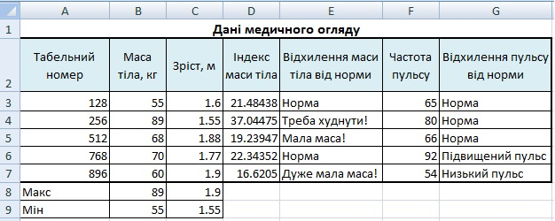

Практична робота 3.1
Створіть таблицю для введення й обчислення результатів медичного огляду працівників певного підприємства.
Хід виконання
- Створіть таблицю за формою, поданою на рис. 3.9. Збережіть її у файлі з іменем Практ_3_1.xlsx. уведіть дані у стовпці Табельний номер; Маса тіла, кг; м і Частота пульсу.
- На основі даних, наведених у таблиці 3.1, визначте, чи є відхилення пульсу від норми. Для цього уведіть до клітинки G3 таку формулу: =IF(F3<60; “Низький пульс”; IF(F3<=80; “Норма”;“Підвищений пульс”)).
Зміст формули такий: якщо пульс становить менше 60 ударів за хвилину, то це низький пульс, в іншому випадку треба виконати додаткову перевірку: якщо пульс менший за 80 ударів, то він у нормі, інакше – підвищений. Скопіюйте цю формулу в клітинки G4:G7.
- Для розрахунку індексу маси тіла працівника скористайтеся формулою Ind = x/y2, де х – маса, кг; у – зріст, м. Для обчислення індексу маси тіла першого працівника введіть цю формулу у клітинку D3 і скопіюйте її до клітинок D4:D7 для визначення індексу маси тіла для решти працівників.
- На основі даних таблиці 3.2. за допомогою логічної функції IF визначте для першого працівника відхилення маси тіла від норми за формулою, яку введіть до клітинки Е3.
Таблиця 3.2. Відповідність між зростом та масою тіла людиниФормулу уведіть самостійно, застосувавши той самий принцип, що й у формулі для визначення типу пульсу. Скопіюйте введену формулу для клітинок Е4:Е7 (рис. 3.10).
- До клітинок В8 і В9 введіть формули для обчислення максимальної та мінімальної маси тіла. Скористайтеся для цього відповідними статистичними функціями.
- Скопіюйте формули з клітинок В8:В9 у клітинки С8:С9. У результаті ви маєте отримати таку таблиця, як на рис. 3.10.
Рис. 3.9. Форма таблиці для запису результатів медичного огляду працівників підприємства
Таблиця 3.1. Визначення типу пульсу

Рис. 3.10. Таблиця результатів медичного огляду
Рис. 3.10. Таблиця результатів медичного огляду